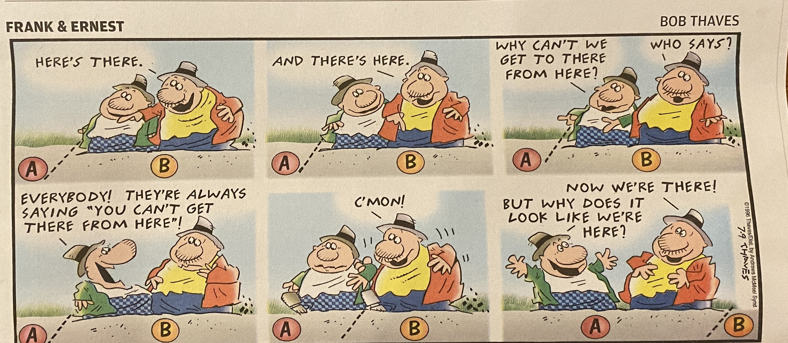

2. Postulates of Relativity#
2.1. Two Postulates of Relativity#
All of relativity follows from two surprisingly simple postulates. Once you accept these postulates, you can use the tools of mathematics to derive predictions for how space and time will behave, and how objects will move within them.
1. The laws of physics are the same in all inertial reference frames.
Another way to express this postulate is to assert that there is no universally preferred, or absolute, reference frame. If you are on a train moving East, and I am on a train moving West, there is no physical experiment we can perform that will tell us who is “really” moving. You might try to assert that while both trains are moving, the ground is not, but of course, the Earth is spinning and orbiting a star that is itself orbiting a galaxy that is drifting through the universe. The closest thing there is to a universal reference frame is the reference frame of the cosmic microwave background radiation, which permeates the whole universe as a record of that moment when most of space became transparent about 14 billion years ago. That’s a very large system to choose as a reference, but the choice is arbitrary. There’s nothing about the universe that says even that choice is more natural than any other. Once you choose a reference frame, any set of experiments or measurements you carry out will follow the same set of rules as they would in any other reference frame. The answers could be different, but they wouldn’t be “more right” or “more wrong” than measurements carried out in some other inertial reference frame.
2. The speed of light is the same in all inertial reference frames.
This is the most surprising one, but nature seems to have forced this idea onto us. No other speed behaves like this. When someone walks forward on an airplane in flight, a fellow passenger would perceive them as walking at a meter per second or so, but someone on the ground would perceive them as moving at hundreds of meters per second. This seems obvious. The premise that light from a flashlight on an airplane would be measured as having the same speed on the plane as from the ground seems absurd. However, as explained in Chapter 1, this is what actually does happen in nature.
2.2. Clocks and Rulers#
The Theory of Relativity starts with considering motion, which involves changes in location and time. If we’re going to compare the predictions of the theory with actual reality, we’re going to need to make careful, quantitative measurements of what actually happens. Not what we think should happen, not what our intuition leads us to believe, but what actually does happen. This means we need to be clear on what we are actually talking about when we throw words around like space and time (or spacetime). To avoid linguistic confusion and cultural ambguity, physicists use operational definitions to clearly deliniate what we mean. The process by which we measure the thing is the definition of that thing. To measure time and space, we need clocks and rulers.
What makes a clock? Think of everything you have ever heard of being used as a clock. Your list might include the water clock, the hourglass, the sundial, the pendulum (grandfather) clock, an analog clock face, and an atomic clock. Before you read any further, try to determine what they all have in common that makes them work as clocks. The answer is that they all involve repeating patterns in space. Each drop of water is roughly the same as every other drop. The hands of the clock return to the same positions. The pendulum repeats its swing. In so far as the pattern repeats precisely, it’s a “good” clock. If there are deviations from the pattern (the pendulum slows down due to friction), that makes the clock less good. Anything that is a spatially repeating system can be considered a clock, and in fact, this is how we define time in the first place: when the clock returns to the exact same configuration, so that everything about it is exactly the way it was before, the one thing that is different is the thing that we call “time”.
Once you have a clock, the pattern of its repetition defines a cycle, and we can split that cycle up into convenient segments and assign a number to each one. As the clock goes through its cycle, the numbers change, and any particular number is called a “clock reading”. If we represent a clock reading in general by the letter \(t\), then a particular clock reading might be \(t_1\) or \(t_2\), or “10.5 s” or 15:30 on a 24 hour clock. The difference between any two clock readings is called a “time interval” or a “duration”.
It’s important to keep these two concepts distinct, as often in casual language both “clock reading” and “duration” get referred to as “time”, but they could feasibly mean very different things. “The bus will come at 8:26 am” refers to a clock reading, but “the bus is running 17 minutes late” refers to a time interval. We often write intervals with the Greek letter delta (\(\Delta\)), where the delta indicates a difference. This difference is always understood to be the later value minus the earlier value, so for example, a time interval would be the difference between two clock readings: \(\Delta t = t_2 - t_1\).
Sometimes the distinction between value and difference can be confusing, because if the first clock reading happens to be zero, then the length of the time interval is numerically the same as the second clock reading. The bus will arrive at a time interval of eight hours and twenty-six minutes after midnight, at which point the clock reading is 08:26. This property of zero makes for convenient shortcuts, but also blurs the defintions of these two distinct concepts. People, even professional scientists, often refer to both clock readings and durations as “time”, particularly in graphs, which leads to even more confusion for beginners. A plot might show temperature vs. time over the course of a day, in which case the horizontal axis is clock reading, or a plot might show a histogram of how many times the bus was late as a function of the delay time, in which case the horizontal axis is a duration.
Checkpoint
For each of the following, would you think of them as a clock reading or a duration?
Choose an option, above, think of how you would classify the example, and click on "Reveal Discussion", below. This text will change to an explanation of my answer, which could be debatable.
Rulers are the clocks of space. In practice, a ruler is something that has a fixed length in space. In so far as the length is not fixed, it’s not a good ruler. A rubber band does not make a good ruler. However, even a steel bar will flex under stress, or change its length when the temperature changes. The only way we can know if a ruler is still good is to compare it with some other ruler. If there is reliable consistency, we can trust the ruler. Of course, if all the rulers are changing together, we would have no way of knowing. Sometimes, the best way we have to make a ruler is to take advantage of the constancy of the speed of light (postulate two) and use a clock along with a pulse of light to define a distance. This is, in fact, the official international way to define a meter: the distance light moves in \(1/299792458\) of a second.
Much like with clocks, once you have a ruler, you can subdivide it with numbered markings. Each mark would be a ruler reading, and the difference between two marks would be a distance. If you include the direction of the distance, then it’s called a displacement. (If I walk two miles, I have walked a distance of two miles, but if it’s two miles to the East, that’s a displacement. If I walk in a circle and return to where I started, I will have a zero total displacement, but I have walked a non-zero distance.)
The most important implication of these definitions that you should understand is that these are the definitions of space and time. Time is not some abstract thing that is “out there”, independent of the clock measurement. It is the clock measurement. This is one of the biggest mental leaps that relativity demands. Secondly, this definition makes a clock like an odometer for time. There is no reason to expect different clocks that are doing different things to necessarily measure the same time intervals. Two clocks that travel different paths between the same two events might well measure different time intervals between those two events, much like two cars that drive different routes between two cities might well show different changes on their odometers. A table does not have a property called “length”, independent of how you measure it. You will see in later chapters that different procedures for measuring length will generate different results, without any of them necessarily being “wrong”. In most cases, the discrepencies aren’t noticiable unless there are speeds involved that are near the speed of light. This is why we fall into the trap of thinking that the quantities like “length” or “time interval” have some inherently existing value, which we just happen to be measuring. If you can make the mental jump that the measurements define the quantities; that the quantities don’t exist out there independent of the measurements, that will help you understand some of the implications later that seem like paradoxes.
Checkpoint
For each of the following, would you think of them as a ruler reading, a distance, or a displacement?
Choose an option, above, think of how you would classify the example, and click on "Reveal Discussion", below. This text will change to an explanation of my answer, which could be debatable.
Armed with (often idealized) clocks and rulers, we can define a method of identifying where and when something occurs in space and time by using clock and ruler readings. With the concepts of duration and displacement, we can relate the space and time locations of two different occurances to each other. Once we have that, we can start asking how those relationships might be different from different perspectives. But first, we need to be more specific about what the word “perspective” means – we need to define an inertial reference frame.
2.3. Inertial Reference Frames and Events#
The term “inertial reference frame” has come up several times already. Before we go any further, we need to be very clear on what this term means. In essence, a “reference frame” refers to a single set of space and time coordinates. Pick an origin in space and time, and then clock readings mark locations along a time axis, and ruler readings mark locations along spatial axes, which often are the standard cartesian \(x\), \(y\), and \(z\). Four numbers can therefore define a particular location in space at a particular moment in time, relative to the chosen origin.
Once we have multiple sets of four numbers, we can define displacements and durations. If you consider smaller and smaller durations and displacements, the region described by these numbers will shrink to be a mathematical point in space and an instantaneous moment in time. This is sometimes represented as a finger snap or a lightning flash, although in reality neither of those actions are infinitesimal in extent. An infinitesimal chunk of space and time is called an “event”. The total collection of all events is considered to be “reality”.
If reality is the collection of all events that happen throughout space and time, the question that concerns us in this course on Special Relativity is how these events are measured by different observers in relative motion. We need to be a bit more specific about what it means to establish a system of coordinates in space and time. Typically by the time you reach the age at which you are reading this book, you will already take for granted the idea that space and time are a kind of fixed lattice underlying reality as we know it, and that locations in space and time have an absolute meaning independent of who is trying to measure them. One of the goals of this book is to convince you this intuitive picture does not actually match reality.
Therefore, we must be more specific about what these four numbers (\(x\), \(y\), \(z\), and \(t\)) are and how they might be measured. The typical image that is called forth to represent this process is a lattice of rulers and clocks. Imagine you had an infinite number of clocks and also an infinite number of rulers. You painstakingly synchronize all these clocks, and confirm that the rulers are all not different in length. Now, you very slowly move the clocks out through space, putting one at the end of each ruler, and then extending the rulers out from each placed clock, so that in the end, you have a lattice of cubes made by the rulers, with a clock at each vertex. The location of each clock is therefore the number of rulers in each direction from the origin, and each clock has a reading, based on the overall synchronization. A single event, therefore, can be recorded as happening at the nearest clock (as long as these rulers are imaginary, we can imagine them being as small as we need them to be to achieve the desired spatial resolution), marked at that clock reading: \(x\), \(y\), \(z\), and \(t\). Those numbers can be collected after the events by bringing the clocks back together and collating their readings.
This concept of an infinite lattice of synchronized clocks represents our idea of a “reference frame”. As long as we are imagining an infinite lattice, we can imagine a second infinite lattice (or a third, or as many as we like) that is passing through the first, moving at a constant relative velocity. This velocity could be measured by recording when certain clocks pass each other, and when the clocks are gathered up again later, the number of rulers traveled divided by the durations on the relevant clocks would reveal the relative velocity, which we will designate as \(v_R\). For special relativity, we require that \(v_R\) be constant. Fig. 2.1 shows an animated representation of two reference frames in relative motion, although you have to imagine the lattice of rulers and clocks extending off to infinity. If you zoom in far enough to move the edges of the lattice outside the frame of the animation, that will convey the feeling of the infinite lattice, for a while.
Fig. 2.1 Animation of two reference frames in relative motion. The spheres represent clocks, and the rods represent rulers. The viewer must imagine that the lattice continues on indefinitely an all directions. The camera is at rest with respect to the reference frame colored red, while the green frame is in constant relative motion. The animation will loop, to represent more clocks and rods coming in from the side.#
Ultimately, we are interested in how objects in the universe move and interact with each other. To study this motion, we need to make measurements of location and duration. These measurements need to happen within a single, consistent reference frame. Measurements recorded in different reference frames can and will be compared, but they should never be mixed together. A displacement measured in one reference frame divided by a duration measured in another reference frame would not represent a real velocity. An object could be at rest (velocity of zero) in one reference frame, but to observers recording in a second reference frame, moving at a relative velocity to the first, the object would be recorded in different places at different times. In other words, to the observers at rest with respect to the second reference frame, the object (and the lattice of rulers and clocks linked to it) would be moving, not their own lattice of rulers and clocks.
Another important assumption we must make about the reference frames we consider in special relativity is that they be “inertial frames”. What this means, simply expressed, is that Newton’s laws are accurate when objects are observed within the frame. Objects’ velocities do not change unless a force acts upon them, momentum and energy are conserved, and so forth. An example of a non-inertial reference frame would be if you put the reference frame lattice on a carousel. Using this rotating lattice of rulers and clocks, objects could be observed to move in complicated, changing patterns, without any observable forces causing the changes in motion (so we make up fictitious forces and call them names like “centrifugal” or “coriolis” to make Newton’s laws keep working).
The rules of Special Relativity (SR) only work in inertial reference frames. Usually, but not always, this means reference frames that have constant velocity, including zero. To deal with accelerating reference frames, which may or may not be inertial, you must turn to the General Theory of Relativity (GR). The GR is mostly outside the scope of this book, although Chapter 13 and Chapter 14 introduce the main ideas and explore some of the most famous implications.
Checkpoint
Which of the following is NOT an inertial reference frame?
Choose your answer above and check the button below.
2.4. Important Correlaries to the Postulates#
Nothing physical can travel faster than \(c\). We will see why in later chapters of this book, but it’s important to be aware of that from the beginning. Once you demand that a speed be the same in all reference frames, as the second postulate does, the universe will conspire to make sure nothing moves faster than that. It’s important to note that we call this speed “the speed of light”, but that’s because light, having no inertial mass, moves at the fastest speed possible. Light will slow down in materials like water or glass, so if we’re being careful, we should call this speed “the speed of light in a vacuum”. But really, it’s the speed light moves in a vacuum simply because that’s the fastest speed the universe allows. Anything with no inertial mass will move at that speed (the particles called neutrinos also have almost no mass, and they move that fast, too). So it is not possible for anything to move from one place to another faster than \(c\). We really should call it “the maximum speed of the universe, at which light in a vacuum happens to move”, but that’s a mouthful, so we just call it “the speed of light”, or \(c\). Please do remember, though, that the motion of light is a consequence of the speed limit and not its cause.
Because of the absolute speed limit, you can’t “just know” what’s happening at some other location than your own. It takes time for anything, anything that might convey information or have an effect, to move from another location to yours. Even when you look across the room, you are seeing the opposite wall as it was a few nanoseconds ago. The Moon you see in the sky is the Moon as it was about a second ago. The Sun that shines on us is the Sun from eight minutes ago. We often describe physical situations as if we have an instantaneous overview of everything everywhere all at once. This is impossible. Even to measure the ends of an object with a ruler demands either moving one’s self to the other side of the object, or sending a light beam to the other side and back.
Many misunderstandings and confusions in special relativity arise from people assuming they just know what is going on at another location, without allowing for the time it would take to get from one location to another. We can shortcut this limitation by supposing the events in question were surrounded by a clock/ruler lattice that enables us to reconstruct all the clock and ruler readings after the fact, and retroactively describe what happened. However, in real time, you can only know about information at your location. Fig. 2.2 displays in a humorous way the very real principle that you always make observations where you are, and that your location is always at rest in your own reference frame.
{kind=link}

Fig. 2.2 Frank and Earnest cartoon from Sunday, July 8, 2023. Image copyright Bob Thaves.#
Most of special relativity is about comparing measurements according to two different reference frames that are in motion relative to each other. Special relativity demands the assumption that the relative velocity between the frames is constant (a “special” case). If the motion of the reference frames is not constant, the theory must be modified to a more general form, which makes it General Relativity (see Chapter 13).
Before we go any further, it is important to state three characteristics of these reference frames that might seem self-evident, but they have important implications that are worth articulating explicitly. First, imagine each frame of reference has a set of observers associated with it, or acting within it. Both sets of observers have to agree that the same events happened. Switching reference frames does not change what actually happens. People in different reference frames may well disagree on when and where events happen, but they should not disagree on whether the events happen.
Second, each set of observers must agree on what the results of measurements are. Not only must there be agreement within the set of observers within a particular reference frame, but each set of observers must agree on what measurements are made by the other set of observers in the other reference frame. Those measurements might well contradict each other, but all observers should agree on what they are. For example, if a set of observers in reference frame 1 agree that a room is 12 m across, a set of observers in reference frame 2 should not be able to truthfully assert that the first set of observers actually measured the room to be 11 m across. The second set of observers could feasibly measure the room to be 11 m across, themselves, but they should agree that the first set of observers measured 12 m.
All sets of observers should agree that causes come before effects. We will find that switching reference frames will change many aspects of space and time that you are used to thinking of as universal. However, causes must still come before effects. This is, as some have suggested, a kind of definition of time. As the old saying goes, “Time… is what keeps everything from happening at once.” [Cummings, 1923] See also this Science Asylum YouTube video. Not an operational definition, mind you (the operational definition of time is described with the clocks in Section 2.2), but a useful description.
Finally, it is important to articulate a principle that every prediction SR makes, every formula we derive, should not contradict what Newtonian Mechanics predicts when the speed is very small. We know Newtonian Mechanics works as well as you could like when you are dealing with the speeds of horses and dump trucks. Although SR can (and will) make wildly different predictions at high speeds near the speed of light, the predicted relationships must reduce to the Newtonian predictions when you let the speed be very small. This important check on our imagination is called the correspondence principle.
Checkpoint
For each of the following, decide whether it’s possible or impossible under the rules of special relativity, then click the button.
Choose an option, above, think of how you would answer the question, and click on "Reveal Discussion", below. This text will change to an explanation of my answer, which could be debatable.
2.5. Model to describe the experimental results.#
One interpretation of Michelson’s experimental results (See Chapter 1) is to say that observers in any inertial reference frame will measure that light travels at the same speed. This is quite in contrast to how sound moves through the air. If I am moving towards the source, the sound seems to be traveling faster than when I am moving away from the source. If an inertial observer measures the speed of the photons that come from a flashlight that she holds in her hand, she would get the value \(c = 3.0 \times 10^8\) m/s. If a second observer, moving at a speed of \(2.8 \times 10^8\) runs away from (or towards) the flashlight would also measure the speed of the photons emitted by that same flashlight to be \(c\), precisely the same value as the other observer. This is intuitatively absurd, but it agrees with the experiments, so it is a ‘not wrong’ model for the propagation of light.
The next step in developing the model is to transform this literary statement into mathematical terms so that quantitative predictions can be made. Consider a point source emitting light waves in three dimension. An observer would see the light waves traveling out in the shape of a sphere whose radius is dependent of time (as seen in Fig. 2.3). As the light is emitted, in some very small time interval \(dt\), the wave front makes a spherical shape of radius \(r = c dt\). The 3-dimensional equation for a spherical shape centered at the origin is:
Using the distances represented by the arrows in Fig. 2.3, equation (2.1) becomes:
where \(dx\), \(dy\), and \(dz\) are how much the observer measured the wave front to propagate in each of the three cartesian directions during the time interval \(dt\), and \(c\) is the speed of light as measured by the observer.
Consider a second reference frame, which we designate “the primed frame” (all variables measured in this frame will have a prime on them, like \(x^\prime\)), traveling at a constant speed \(v_R\) in the \(\hat{x}\) direction with respect to the first observer (the first observer finds the source of the light flash to be at rest). If this second observer were to observe the same set of events (the wave front of the light propagating away from the point source), what should she see?
Fig. 2.3 Animation of an expanding sphere of photons from an initial flash. The radius of the sphere, with length \(ct\) is shown as a black arrow, with the cartesian components indicated by red arrows. The animation will rotate to display the three-dimensional nature of the diagram.#
Common sense says that the wave front should no longer seem to be spherical, but should appear to be oblate (a squashed sphere). The light moving toward the observer should be travelling faster, and the light moving away should be travelling more slowly, so the expanding light should not be able to maintain its spherical shape. If it were an expanding sound wave, like from someone clapping their hands once, that is indeed what we would observe.
However, what Michelson found was that this spherical wave had to look the same to the second observer as it appeared to the first observer. Otherwise, the second observer would measure a different velocity for the light wave. What the observer in the primed reference frame measures is a spherical wave that propagates outward at the same speed as shown in Equation (2.1). The second (primed) observer also sees a spherical wave, but this time the observer measures:
where \(dx^\prime\), \(dy^\prime\), and \(dz^\prime\) are how much the second observer measured the wave front to propagate in time interval \(dt^\prime\), and \(c\) (not \(c^\prime\)!) is the speed of light.
If you subtract Equation (2.3) from (2.2), you get:
It appears that there is a sum of squares of measured displacements and time intervals for the measurement of the propagation of the wave front of a light wave that are the same for each of the two observers (moving with respect to each other) that remains constant. This statement can be written as a conservation law. The sum:
must remain constant. This conservation law is quite different from what Newton and his contemporaries would have thought was ‘conserved’ in the measurement of the motion of an object. In the Newtonian world, the value of \(dt\) would be the same for both observers, demanding that we infer different speeds: \(c^\prime \neq c\). Instead we insist that it is this strange looking sum that remains unchanged. But, if this model agrees with the experiments, it is not wrong; even if it disagrees with Newton’s model.
Checkpoint
For each of the following, could you consider it an operational definition or not?
Choose your answer above and check the button below.
2.6. Then Let’s Begin…#
Armed with these postulates, concepts, and principles, we are ready to begin characterizing the universe of space and time, and to discover the surprises waiting therein…
2.7. Problems#
Alice and Bob are trying to cross a river in a canoe. The river is 20 m wide. The velocity of the water is to the left with a speed of \(v=5\) m/s. What average velocity should they try to achieve with their canoe if they want to reach a point directly across from their starting point in 60 s? Take \(\hat{x}\) to point right and \(\hat{y}\) to point across the river. How is this problem relevant to the topics of this chapter?
At time \(t=0\), two reference frames (call one red and the other green) have their origins at the same location. However, the green one is moving relative to the red one with a velocity of \(\vec{v} = (1~{\rm m/s})\hat{x} + (2~{\rm m/s})\hat{y} - (0.5~{\rm m/s})\hat{z}\). If an observer in the red frame measures an event to occur at \(t=2\) s in the location \(\vec{r} = (0.5~{\rm m})\hat{x} - (4~{\rm m})\hat{y} + (3~{\rm m})\hat{z}\), approximately what will an observer in the green frame measure as the time and space coordinates for this event?
Do both observers get the same answer for Equation (2.5) for the case described in problem 2? Take the second event to be the origin.
When you look up at night and see Jupiter, you are seeing a Jupiter from the past. Roughly how long ago did the light that goes into your eye leave Jupiter? When you look at the stars, roughly how old are they? If you look at the Andromeda Galaxy, how old is it?
How fast is your speed due to the Earth spinning? How fast is your speed due to the Earth going around the Sun? How fast is your speed due to the Sun going around the Galaxy? How fast is your speed due to the Galaxy moving toward the Great Attractor? How fast is your speed relative to the Cosmic Microwave Background Radiation? The last two you can just look up, but the first two you should be able to calculate from di stance traveled divided by duration of time, although you can look those up, if you don’t happen to know them.
How many ways can you think of to measure the length of a tabletop? Confirm that none of them require you to “just know” what is happening at a location that is not right where you are.